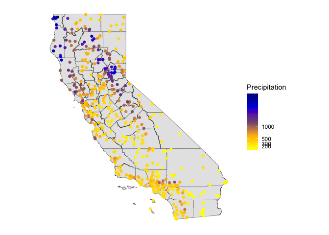

Spatial Interpolation
GEO 200CN - Quantitative Geography
Professor Noli Brazil
May 22, 2024
In this lab guide, we transition to prediction in the spatial world. Spatial interpolation is the prediction of exact values of attributes at unsampled locations from measurements made at control points in the same study area. We will learn how to run the deterministic spatial interpolation methods described in OSU Ch. 9. The objectives of this lab are as follows
- Learn how to interpolate values using proximity polygons
- Learn how to interpolate values using nearest neighbor local spatial average interpolation
- Learn how to interpolate values using inverse distance weighted interpolation
To help us accomplish these learning objectives, we will use precipitation data from weather stations in California. Our goal is to create a raster surface of California total precipitation values. Lab material has been adapted from Spatial Data Science.
Installing and loading packages
We’ll be using one new package in this lab. Install the package.
install.packages("gstat")Load it and all other necessary packages.
library(sf)
library(tidyverse)
library(terra)
library(dismo)
library(gstat)
library(rspat)Bringing in the data
To demonstrate spatial interpolation we’ll be relying on a dataset containing monthly precipitation data for weather stations in California. Bring in the dataset precipitation which is a part of the rspat package.
d <- spat_data('precipitation')
class(d)## [1] "data.frame"The data is not spatial.
head(d)## ID NAME LAT LONG ALT JAN FEB MAR APR MAY JUN JUL
## 1 ID741 DEATH VALLEY 36.47 -116.87 -59 7.4 9.5 7.5 3.4 1.7 1.0 3.7
## 2 ID743 THERMAL/FAA AIRPORT 33.63 -116.17 -34 9.2 6.9 7.9 1.8 1.6 0.4 1.9
## 3 ID744 BRAWLEY 2SW 32.96 -115.55 -31 11.3 8.3 7.6 2.0 0.8 0.1 1.9
## 4 ID753 IMPERIAL/FAA AIRPORT 32.83 -115.57 -18 10.6 7.0 6.1 2.5 0.2 0.0 2.4
## 5 ID754 NILAND 33.28 -115.51 -18 9.0 8.0 9.0 3.0 0.0 1.0 8.0
## 6 ID758 EL CENTRO/NAF 32.82 -115.67 -13 9.8 1.6 3.7 3.0 0.4 0.0 3.0
## AUG SEP OCT NOV DEC
## 1 2.8 4.3 2.2 4.7 3.9
## 2 3.4 5.3 2.0 6.3 5.5
## 3 9.2 6.5 5.0 4.8 9.7
## 4 2.6 8.3 5.4 7.7 7.3
## 5 9.0 7.0 8.0 7.0 9.0
## 6 10.8 0.2 0.0 3.3 1.4dim(d)## [1] 456 17We have monthly precipitation levels for 456 weather stations in
California. Rather than monthly levels, we’ll be interpolating annual
precipitation levels. So, we add up the 12 months using
sum() and c_across() to create the year total
or sum variable prec.
d <- d %>%
group_by(ID) %>%
mutate(prec = sum(c_across(JAN:DEC))) %>%
ungroup()Plot to see what the distribution looks like using the basic base
plotting function plot().
plot(sort(d$prec), ylab='Annual precipitation (mm)', las=1, xlab='Stations')
Next, let’s map the annual levels. Bring in a California county layer from the rspat package.
CA <- spat_data("counties")And then map the stations by levels of total precipitation. We’ll
first need to make spatial points out of the station data using the
vect() function from terra.
dsp <- vect(d, c("LONG", "LAT"), crs="+proj=longlat +datum=NAD83")Then mapify
# define groups for mapping
cuts <- c(0,200,300,500,1000,3000)
# set up a palette of interpolated colors
blues <- colorRampPalette(c('yellow', 'orange', 'blue', 'dark blue'))
ggplot(data = st_as_sf(CA)) +geom_sf() +
geom_sf(data = st_as_sf(dsp), aes(color = prec)) +
scale_colour_gradientn(breaks = cuts, colours = blues(5), name ="Precipitation") +
theme( axis.text = element_blank(),
axis.ticks = element_blank(),
panel.background = element_blank())
We’ll stay in terra’s SpatVector world for representing spatial data in this lab guide because some of the functions we will use later is not sf friendly.
Transform longitude/latitude to planar coordinates, using the
commonly used coordinate reference system for California (“Teale
Albers”) to assure that our interpolation results will align with other
data sets we have. We’ll use the function project() from
**terra* to reproject the CRS.
TA <- "+proj=aea +lat_1=34 +lat_2=40.5 +lat_0=0 +lon_0=-120 +x_0=0 +y_0=-4000000 +datum=WGS84 +units=m"
dta <- project(dsp, TA)
cata <- project(CA, TA)Mean model
Our goal is to interpolate (estimate for unsampled locations) the station precipitation values across California. The simplest way would be to use the mean of all observed values. This is described on page 253 in OSU. It’s not a great interpolator because it does not take into account anything spatial. We’ll consider it a “Null-model” that we can compare other more refined approaches to. We’ll use the Root Mean Square Error (RMSE) as the evaluation statistic. We created a nifty RMSE function in a prior lab. Let’s bring it back here.
RMSE <- function(observed, predicted) {
sqrt(mean((predicted - observed)^2, na.rm=TRUE))
}Get the RMSE for the Null-model
null <- RMSE(dsp$prec, mean(dsp$prec))
null## [1] 435.3217Proximity polygons
OSU’s first spatial interpolator is proximity polygons, which is
described on page 254. Another term for this is “nearest neighbour”
interpolation. We use the function vornoi() to create the
polygons surrounding the control points. Note that vornoi()
is not sf friendly. sf has the
function st_voronoi(), but running it takes a lot more work. Let’s
plot the polygons.
v <- voronoi(dta)
plot(v)
points(dta)
Looks weird. Let’s confine this to California by using the
crop() function from terra. Also create a
basic choropleth map of precipitation using plot().
vca <- crop(v, cata)
plot(vca, "prec")
Much better. These are polygons. Our ultimate goal is to create a continuous raster surface of precipitation values. We learned about raster data in a prior lab. We can ‘rasterize’ the results like this.
r <- rast(vca, res=10000)
vr <- rasterize(vca, r, "prec")
plot(vr)
You can also plot the results using ggplot()
# Plot the map
ggplot(as.data.frame(vr, xy = TRUE)) +
geom_raster(aes(x = x, y = y, fill = prec)) +
labs(fill = "Predicted precipitation") +
scale_fill_gradient(low= "white", high = "red", na.value ="gray") How good is the proximity polygon model? We evaluate the RMSE using 5-fold cross validation. We’ll use a for loop to run through the folds.
#insert comment
set.seed(5132015)
#insert comment
kf <- kfold(nrow(dta))
#insert comment
rmsepp <- rep(NA, 5)
#insert comment
for (k in 1:5) {
#insert comment
test <- dta[kf == k, ]
#insert comment
train <- dta[kf != k, ]
#insert comment
v <- voronoi(train)
#insert comment
p <- extract(v, test)
#insert comment
rmsepp[k] <- RMSE(test$prec, p$prec)
}
#insert comment
rmsepp
#insert comment
mean(rmsepp)
#insert comment
1 - (mean(rmsepp) / null)Question 1: Add comments to the above code chunk to describe what each step is doing.
Question 2: How does the proximity-polygon approach compare to the NULL model?
Question 3: You would not typically use proximity polygons for rainfall data. Why? For what kind of data would you use them?
Local Spatial Average
The Local Spatial Average method (OSU page 255) generalizes the proximity polygon method by considering more than one neighbor. Here we do nearest neighbor interpolation considering five neighbors.
We can use the gstat() function located in the
gstat package for this. First, the function does not
take on SpatVector objects, but regular data frames with (x,y)
coordinates. So we need to convert the SpatVector dta
to a data frame.
d <- data.frame(geom(dta)[,c("x", "y")], as.data.frame(dta))
class(d)## [1] "data.frame"head(d)## x y ID NAME ALT JAN FEB MAR APR MAY JUN
## 1 280058.6 -167265.4 ID741 DEATH VALLEY -59 7.4 9.5 7.5 3.4 1.7 1.0
## 2 355394.7 -480020.3 ID743 THERMAL/FAA AIRPORT -34 9.2 6.9 7.9 1.8 1.6 0.4
## 3 416370.9 -551681.2 ID744 BRAWLEY 2SW -31 11.3 8.3 7.6 2.0 0.8 0.1
## 4 415173.4 -566152.9 ID753 IMPERIAL/FAA AIRPORT -18 10.6 7.0 6.1 2.5 0.2 0.0
## 5 418432.1 -516087.7 ID754 NILAND -18 9.0 8.0 9.0 3.0 0.0 1.0
## 6 405858.6 -567692.3 ID758 EL CENTRO/NAF -13 9.8 1.6 3.7 3.0 0.4 0.0
## JUL AUG SEP OCT NOV DEC prec
## 1 3.7 2.8 4.3 2.2 4.7 3.9 52.1
## 2 1.9 3.4 5.3 2.0 6.3 5.5 52.2
## 3 1.9 9.2 6.5 5.0 4.8 9.7 67.2
## 4 2.4 2.6 8.3 5.4 7.7 7.3 60.1
## 5 8.0 9.0 7.0 8.0 7.0 9.0 78.0
## 6 3.0 10.8 0.2 0.0 3.3 1.4 37.2Next we fit the following model. ~1 means “intercept
only”. In the case of spatial data, that would be only ‘x’ and ‘y’
coordinates are used. We set the maximum number of nearest neighbor
points to 5, and the “inverse distance power” idp to zero,
such that all five neighbors are equally weighted (so the message you
will get that says you are running inverse distance weighting
interpolation is not true in this case).
gs <- gstat(formula=prec~1,
locations=~x+y,
data=d,
nmax=5,
set=list(idp = 0))We then use interpolate() to interpolate precipitation
values across the raster r using the local spatial average
interpolator gs.
nn <- interpolate(r, gs, debug.level=0)debug.level=0 just eliminates the message that tells you
what interpolation method you are using (take out
debug.level=0 to see this).
Plot the results.
nnmsk <- mask(nn, vr)
plot(nnmsk, 1)
Note that the result of the interpolation provides the predicted value in the first column
names(nnmsk)## [1] "var1.pred" "var1.var"We can also use ggplot() to map.
# Plot the map
ggplot(as.data.frame(nnmsk, xy = TRUE)) +
geom_raster(aes(x = x, y = y, fill = var1.pred)) +
labs(fill = "Predicted precipitation") +
scale_fill_gradient(low= "white", high = "red", na.value ="gray") Cross validate the result (k = 5). Note that we can use the
predict() method to get predictions for the locations of
the test points.
rmsenn <- rep(NA, 5)
for (k in 1:5) {
test <- d[kf == k, ]
train <- d[kf != k, ]
gscv <- gstat(formula=prec~1, locations=~x+y,
data = train, nmax=5,
set=list(idp = 0))
p <- predict(gscv, test)$var1.pred
rmsenn[k] <- RMSE(test$prec, p)
}## [inverse distance weighted interpolation]
## [inverse distance weighted interpolation]
## [inverse distance weighted interpolation]
## [inverse distance weighted interpolation]
## [inverse distance weighted interpolation]rmsenn## [1] 200.6222 190.8336 180.3833 169.9658 237.9067mean(rmsenn)## [1] 195.9423How does it compare to null model?
1 - (mean(rmsenn) / null)## [1] 0.5498908Better than the null, but better than proximity polygons?
Inverse Distance Weighted
A more commonly used interpolation method is “inverse distance weighted” interpolation. This method is described starting on page 257 in OSU. The only difference with the nearest neighbor approach is that points that are further away get less weight in predicting a value a location. In the IDW method, values at unsampled locations are estimated as the weighted average of values from the rest of locations with weights inversely proportional to the distance between the unsampled and the sampled locations.
Use the gstat() function again, but this time do not set
idp to 0 but to 1.
gs <- gstat(formula=prec~1,
locations=~x+y,
data=d,
set=list(idp = 1))
idw <- interpolate(r, gs, debug.level = 0)Plot the predictions.
idwr <- mask(idw, vr)
plot(idwr, 1)Question 4: IDW generated rasters tend to have a noticeable artifact. What is it?
Cross validate (k = 5). We can predict to the locations of the test points
rmseidw <- rep(NA, 5)
for (k in 1:5) {
test <- d[kf == k, ]
train <- d[kf != k, ]
gs <- gstat(formula=prec~1, locations=~x+y,
data=train, set=list(idp=1))
p <- predict(gs, test)
rmseidw[k] <- RMSE(test$prec, p$var1.pred)
}## [inverse distance weighted interpolation]
## [inverse distance weighted interpolation]
## [inverse distance weighted interpolation]
## [inverse distance weighted interpolation]
## [inverse distance weighted interpolation]rmseidw## [1] 330.0236 336.7008 314.5188 321.3067 313.4140mean(rmseidw)## [1] 323.1928How does it compare to the null?
1 - (mean(rmseidw) / null)## [1] 0.2575772Question 5: Inspect the arguments used for and make a map of the IDW model below. What other name could you give to this method (IDW with these parameters)? Why?
gs2 <- gstat(formula=prec~1,
locations=~x+y,
data=d,
nmax=1,
set=list(idp=1))
This
work is licensed under a
Creative
Commons Attribution-NonCommercial 4.0 International License.
Website created and maintained by Noli Brazil